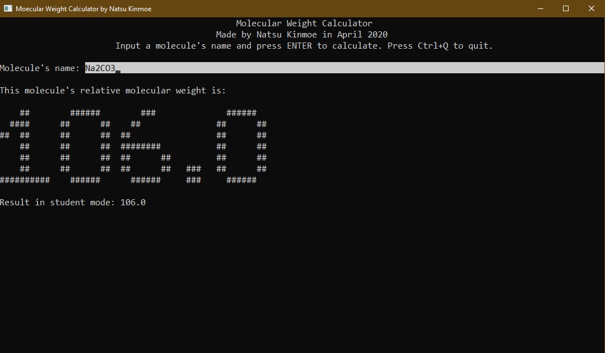

If you think you are good at chemistry, and you don't need this tool at all, please leave this page at once, thank you.
This program is just for fun, but it is not for exams.
如果你认为你的化学很好，不需要这个软件，请立即离开，谢谢。
本程序仅供娱乐，请勿过度依赖，以免影响你的考试。
If you are a middle school student, you must be worried about chemistry, like me. (Be quiet! Don't let my chemistry teacher hear it!)
You also must be worried about the calculation problems in the chemistry exams. The annoying chemical equation, the annoying molecular weight and the annoying format.
So this program is made to calculate the relative molecular weight, for most of the middle school students like me. I hope you will enjoy using the program.
如果你是一个中学生，你一定很担心你的化学成绩，像我一样。（小声点，别被我的化学老师听见了！）
你一定也很担心你的试卷中的计算题。那令人头疼的化学方程式、令人头疼的相对分子质量和令人头疼的死板格式。
所以为了大部分像我一样的中学生，我制作了这个计算相对分子质量的程序。希望大家使用愉快。

In the periodic table, some of the relative atomic mass is not an integer, like Cu is 63.6, but you will find an integer relative atomic mass in your examination paper, like 64. So I made a Student Mode to solve this problem. The result in student mode ignores most of the decimal parts.
针对试卷上相对原子质量与元素周期表中的有误差的情况，我制作了一个“学生模式”，它省略了大部分元素相对原子质量的小数部分，以符合各大考试卷的标准。